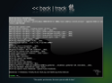
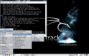

BackTrack 4: the security professional's toolbox
After a beta period of almost a year, the developers of BackTrack have released the long-awaited successor to version 3. This specialized Linux distribution keeps its focus on security tools for penetration testers and security professionals, but also expands into a new direction: forensic investigations. It comes as a live distribution that is also installable on hard drive, and provides hundreds of open source security tools in a categorized menu hierarchy.
While previous releases
were based on Slackware-derivative SLAX,
BackTrack 4 (code name "pwnsauce") is based on Ubuntu 8.10 ("Intrepid
Ibex"). However, this is not a typical Ubuntu spin-off with a pre-chosen
package set and some eye candy glued on top: many of the tools have
received a custom configuration or patches to accommodate the needs of
security professionals. Therefore, the developers have set up their own
package repositories for updates. Under the hood lies a 2.6.30 kernel with
a variety of patched wireless drivers to "enhance wireless injection
attacks
" as well as some older
wireless drivers for stability.
BackTrack 4 can be downloaded as a 1.5 GB ISO file or as 2 GB VMware image. Actually, the ISO file is all you need in most circumstances: it can be burned to a DVD, written to a USB stick with tools such as Unetbootin or launched as a virtual machine in VirtualBox, VMware, Xen, KVM, and so forth. Instead of using it as a live system, BackTrack 4 can now also be installed from within the live environment, thanks to Ubuntu's Ubiquity installer. The project's website lists tutorials for a couple of installation types, including an installation to hard disk, a dual boot installation, or a persistent installation on a USB stick.
Working with BackTrack

After choosing the default option in the GRUB menu, BackTrack starts with a stylish frame buffer console. One can start working right away on the command line, or fire up a graphical desktop environment with startx. This presents the user with a KDE 3 desktop which has some nice tweaks. For example, there is a Run box embedded in the panel at the bottom, which allows applications to be run without invoking a terminal first. However, some of the tweaks are annoying. For example, the KDE desktop welcomes the user with a very loud startup tune and many system sounds are set at an equally loud level. Also keep in mind that, for the sake of security, networking is disabled by default, so the user has to fire it up manually with a /etc/init.d/networking start command.
The purpose of BackTrack is to present a collection of
hundreds of open source security tools. It would be out of the scope of
this article to list them all. Luckily, all these tools are well organized
in different submenus

The start menu has also some general menus like "Internet", "Graphics", "Multimedia", "System", "Utilities", etc. containing "normal" programs. The nice thing about it is that even some of these programs have a custom configuration. For example, Firefox is configured with the NoScript extension, protecting the penetration tester against malicious JavaScript on hacker websites he probably visits, the Tamper Data extension to view and modify HTTP headers, and the HackBar tool bar to help find and test SQL injections and cross-site scripting (XSS) holes. Moreover, the bookmarks tool bar is filled with some relevant web sites, such as the BackTrack web site and the Metasploit Project. Installing other software is possible with Synaptic or apt-get, which have access to the BackTrack repository, and getting an up-to-date BackTrack is as simple as an apt-get update && apt-get upgrade command.
With each release, BackTrack adds some new software. Starting with BackTrack 4, the distribution supports accelerated password cracking assisted by graphics cards. The Pyrit WPA cracking tool does this using NVIDIA's CUDA. Another newcomer is OpenVAS: previous releases of BackTrack didn't ship with the vulnerability scanner Nessus because of license issues, but BackTrack 4 finally makes up for this with the inclusion of the GPL-licensed OpenVAS.
Forensics
BackTrack 4 adds a new focus, indicated by the new boot menu item "Start BackTrack Forensics". Traditionally, BackTrack wasn't suitable for forensic purposes because it automatically mounts available drives and uses the swap partition it finds on the hard drive. In a forensic investigation of a computer this is obviously a recipe for disaster as it changes last mount times, and also wipes out hidden data in the swap partition which could be important. BackTrack 4 still does all that by default, but not if you start it with the forensics option in the boot menu.
The BackTrack developers have also expanded their collection of tools in the "Digital Forensics" menu. All of this means that BackTrack is now not only useful for penetration testers and security professionals, but also more and more for forensic experts. Of course if used in a forensic investigation it is of utmost importance that BackTrack not go through an unattended boot, as this will use the standard boot mode which 'contaminates' the machine. To be really on the safe side, forensic experts should change the default boot option to the forensic one.
Conclusion
Although BackTrack documentation itself is scarce and fragmentary, this is not a big issue, because it's more about the tools than about the distribution. For people wanting to train their penetration testing skills, the developers offer a "Penetration testing With BackTrack" course. Upon completion of this course, students become eligible to take a certification challenge in an unfamiliar lab. After successful completion of this hands-on challenge, they receive the Offensive Security Certified Professional (OSCP) certification.
More than ever, BackTrack is an excellent Linux distribution for security professionals. With the move from a SLAX-based live cd to a full-blown Ubuntu-based Linux distribution, it's much easier to update the system, install other software or customize the distribution. New tools like OpenVAS and Pyrit are a welcome addition to the security professional's toolbox. In addition, with the increased focus on forensics, the distribution will surely find some use outside the traditional penetration testers' scene.
| Index entries for this article | |
|---|---|
| Security | Distributions |
| GuestArticles | Vervloesem, Koen |